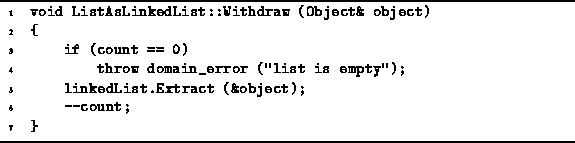

Data Structures and Algorithms
with Object-Oriented Design Patterns in C++
Data Structures and Algorithms
with Object-Oriented Design Patterns in C++
The Withdraw member function is used to remove a specific
object instance from an ordered list.
The implementation of the Withdraw member function for
the ListAsLinkedList class is given in Program  .
.

Program: ListAsLinkedList Class Withdraw Member Function Definition
The implementation of Withdraw is straight-forward:
It simply calls the Extract function provided by
the LinkedList<T> class
to remove the specified object from the linkedList member variable.
The running time of the Withdraw function is dominated
by that of Extract which was shown in Chapter
to be O(n), where n is the number of items in the linked list.
 Copyright © 1997 by Bruno R. Preiss, P.Eng. All rights reserved.
Copyright © 1997 by Bruno R. Preiss, P.Eng. All rights reserved.